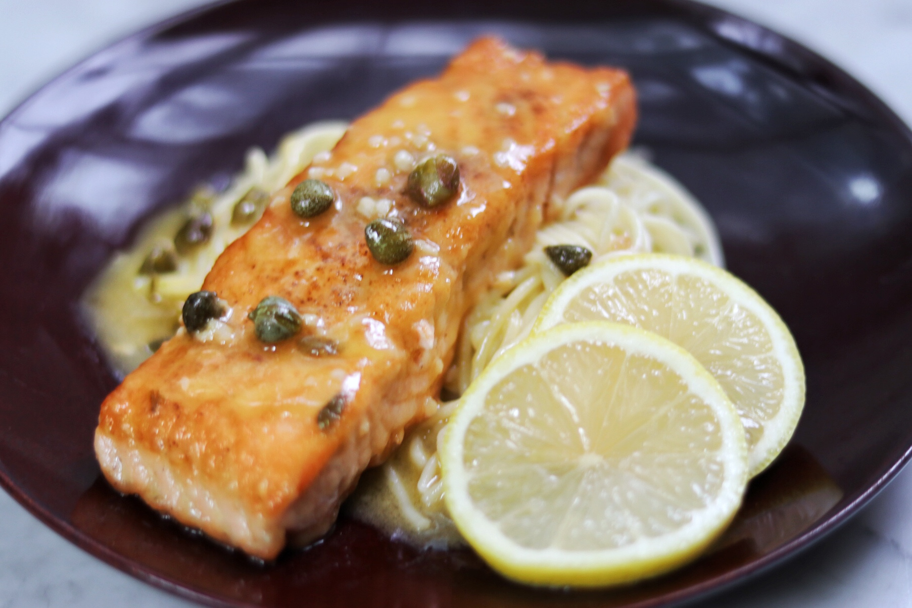

Piccata Recipe
Quick Salmon Piccata
This savory dinner is restaurant-worthy, but can be prepped and cooked in under 30 minutes! If you are not a fan of fish, you can substitute thinly sliced or pounded chicken breasts for the salmon. Serve over pasta or rice.
Ingredients of Zuccini
- 1 eggplant, diced into 1/2-inch squares
- 2 tablespoons extra-virgin olive oil, divided
- 1 tablespoon butter
- 4 mushrooms, chopped
- 1 (26 ounce) jar plain tomato sauce
- ¼ teaspoon dried basil, or to taste
- salt and ground black pepper to taste
- ½ cup dry white wine
- 1 ¾ cups grated Parmesan cheese
- 1 (7 ounce) package mozzarella cheese, cut into strips
Steps to make Zuccini
- Bring a saucepan of water to a boil. Cook eggplant in the boiling water until mostly tender, about 8 minutes. Drain.
- Heat 1 tablespoon olive oil and butter in a skillet over medium-high heat. Saute zucchini and garlic until zucchini starts to soften, about 5 minutes. Add mushrooms; cook until beginning to brown, about 3 minutes.
- Heat remaining olive oil in another saucepan over medium-high heat. Saute onion until golden, about 4 minutes.
- Pour wine into the zucchini mixture; reduce heat and simmer until liquid is nearly gone, about 6 minutes.
- Preheat the oven to 350 degrees F (175 degrees C).
- Bring a large pot of lightly salted water to a boil. Cook farfalle pasta at a boil, stirring occasionally, until tender yet firm to the bite, about 12 minutes. Drain.
- Pour a thin layer of sauce into the bottom of a lasagna dish. Add a portion of the 1 3/4 cups plus 2 tablespoons Parmesan cheese and mozzarella strips.
- Bake in the preheated oven until cheese is well melted, about 20 minutes.